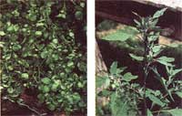

ALISON PECK AND ARLINE RICHARDSON
Watercress (far left) can often be found in supermarkets, as well as in slow-flowing streams. Lamb's-quarters (left) are among the best of wild potherbs when picked while still young.